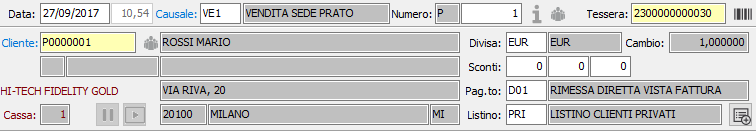
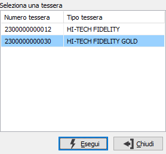
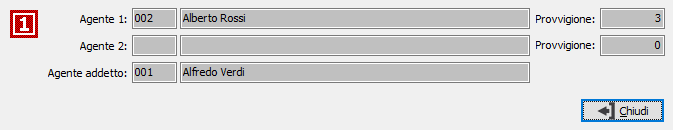

Dati di testa
La parte superiore della finestra contiene i dati di testa relativi
al movimento.

DATA E ORA: indica
la data e l'ora in cui viene eseguita la registrazione del movimento.
Viene proposta la data di sistema.
CAUSALE: codice alfanumerico
di 3 caratteri presente nella tabella Causali
Vendita che definisce la tipologia di movimento in esame. La causale
determina anche il valore di alcuni campi che vengono proposti in automatico.
Sul campo sono attive le funzioni di ricerca (F9) ed accesso rapido (CTRL+W)
sulla tabella stessa. Se prevista una causale predefinita in configurazione
vendita al dettaglio, questa sarà proposta in automatico.
NUMERO: campo numerico
che contiene il numero progressivo del movimento. Viene completato automaticamente
dal programma in base alla serie contenuta dalla causale. E’ modificabile
dall’utente.
NUMERO TESSERA: numero
della tessera, eventualmente posseduta dal cliente. Sul campo sono attive
le funzioni di ricerca (F9). Se indicata la tessera il campo successivo
(cliente), viene completato automaticamente.

CLIENTE:
codice alfanumerico di 8 caratteri, presente in anagrafica clienti, che
individua il cliente da trattare. Sul campo, la cui compilazione è obbligatoria,
sono attive le funzioni di ricerca (F9) ed accesso rapido alla tabella
(CTRL+W) per eventuali nuovi inserimenti o variazioni. Il codice inserito
in questo campo è quello del cliente a cui è intestato il movimento. Dopo
aver selezionato il codice del cliente vengono visualizzati, senza possibilità
di modifica, la ragione sociale e l’indirizzo dello stesso e riportati
gli altri dati (divisa, listino, sconti) se presenti. Il cliente può essere
privato oppure un normale cliente, la ricerca si attiene a quanto indicato
nei dati preferenziali della causale per visualizzare l'elenco dei clienti.
Se il cliente possiede una tessera il numero viene automaticamente inserito
nel campo precedente (numero tessera); nel caso il cliente sia intestatario
di più tessere si aprirà una finestra che, visualizzando le tessere attive
per il cliente, consente di selezionare quale utilizzare. Se è presente
il codice di cassa riportato in configurazione codici fissi ed il movimento
non risulta contabilizzato è possibile modificare il codice cliente agendo
sull'apposito pulsante posto a destra del codice.
CODICE DIVISA: codice
alfanumerico di 3 caratteri, presente nella tabella Divise, per indicare
la divisa stabilita per il movimento attivo. Viene proposta automaticamente
la Divisa presente nell’anagrafica del cliente attivo, modificabile dall’utente.
Sul campo sono attive le funzioni di ricerca (F9).
CAMBIO: campo numerico,
attivo solo in caso di divisa non appartenente all’area Euro, per inserire
il cambio che consentirà la valorizzazione nella moneta di conto del movimento
attivo. Sul campo sono attive le funzioni di ricerca (F9).
SCONTI/MAGGIORAZIONI:
campi numerici per inserire eventuali percentuali di sconto o maggiorazione
che verranno applicate sul totale movimento. Vengono proposte automaticamente
le percentuali presenti nell’anagrafica del cliente attivo, modificabili
dall’utente. In numero di campi sconto/maggiorazione attivi dipende dal
valore inserito in Configurazione base.
CODICE PAGAMENTO:
codice alfanumerico di 3 caratteri, presente nella tabella Modalità di
pagamento, per definire le condizioni di pagamento del movimento in esame.
La compilazione del campo è obbligatoria. Viene automaticamente presentato
il codice presente sulla causale o in anagrafica clienti. Sul campo sono
attive le funzioni di ricerca (F9).
LISTINO: eventuale
codice alfanumerico di 3 caratteri, presente nella tabella Descrizione
listini, per definire il listino prodotti da cui devono essere desunti
i prezzi da applicare al movimento attivo. Se presente, viene proposto
automaticamente il listino presente sulla causale o nell’anagrafica del
cliente attivo, modificabile dall’utente. Sul campo sono attive le funzioni
di ricerca (F9).
Se è attiva la gestione delle vendite a privati UE (in base alla presenza
delle date inizio adesione OSS/IOSS in configurazione) sarà presente il
campo “Regime OSS”; il campo si compone di tre valori: “Nessuno”, “Regime
OSS”, “Regime IOSS”; la presenza dei singoli regimi è condizionata alla
presenza in configurazione delle rispettive date di inizio adesione. La
proposta del campo viene così effettuata: cliente privato (flag privato
in anagrafica clienti spuntato), la nazione del cliente o della destinazione
se presente diversa da Italia (Iso IT) e membro UE (flag membro CEE spuntato);
se attivi entrambi i regimi viene proposto sempre OSS. In base al tipo
di regime ed alla nazione del cliente/destinazione, al tipo di regime
ed al codice nomenclatura eventualmente presente sul prodotto viene ricercato
sulla nuova tabella il codice Iva associato all’abituale codice Iva del
prodotto; se con una specifica nomenclatura non viene trovata nessuna
associazione viene effettuata un nuova ricerca con nomenclatura vuota.
Al salvataggio dei documenti viene effettuato un controllo di coerenza
dei codici Iva presenti sulle righe: devono essere tutti relativi alla
stessa gestione del regime OSS, quindi tutti OSS, tutti IOSS o tutti senza
gestione del regime; sono incluse nel controllo le aliquote Iva delle
spese se è configurato che le spese non debbano essere ripartite e se
valorizzate.
 Se
attiva la gestione dei listini di rigo, configurabile tramite l’omonimo
parametro in configurazione “Standard - ciclo attivo”, è presente, accanto
al listino di testa, il pulsante mostrato a lato che può essere utilizzare
per riassegnare il listino di testa (con relativo ricalcolo dell'importo)
a tutte le righe. Il codice del listino è sempre presente sul rigo del
documento, se non è gestito il listino di rigo viene assegnato comunque
uguale al listino di testa al salvataggio finale del documento.
Se
attiva la gestione dei listini di rigo, configurabile tramite l’omonimo
parametro in configurazione “Standard - ciclo attivo”, è presente, accanto
al listino di testa, il pulsante mostrato a lato che può essere utilizzare
per riassegnare il listino di testa (con relativo ricalcolo dell'importo)
a tutte le righe. Il codice del listino è sempre presente sul rigo del
documento, se non è gestito il listino di rigo viene assegnato comunque
uguale al listino di testa al salvataggio finale del documento.
 Se
attiva la gestione dei voucher ed è configurata la gestione manuale è
presente il pulsante a lato che attiva o disattiva prima della chiusura
del movimento la ricerca di eventuali voucher presenti da utilizzare;
se il pulsante è acceso (premuto) si attiva la gestione dei voucher, se
il pulsante è spento (non premuto/Default) la gestione è disattiva; se
viene inserito il barcode di un voucher il pulsante si disabilita e la
gestione viene attivata automaticamente.
Se
attiva la gestione dei voucher ed è configurata la gestione manuale è
presente il pulsante a lato che attiva o disattiva prima della chiusura
del movimento la ricerca di eventuali voucher presenti da utilizzare;
se il pulsante è acceso (premuto) si attiva la gestione dei voucher, se
il pulsante è spento (non premuto/Default) la gestione è disattiva; se
viene inserito il barcode di un voucher il pulsante si disabilita e la
gestione viene attivata automaticamente.

 Se
attiva la gestione delle provvigioni, è presente il pulsante sotto l'etichetta
Cliente, che in base al tipo di gestione accede agli agenti ed alle percentuali
di provvigione; il codice dell'agente addetto viene sempre visualizzato
ma non è mai modificabile e la percentuale non è mai visualizzata; è presente
un controllo sui movimenti di vendita per cui se l'agente dell'addetto
è uguale all'agente 1 o 2 viene tolto e viene mandato un messaggio, ma
si potrà continuare a registrare il movimento che sarà senza agente addetto.
Se
attiva la gestione delle provvigioni, è presente il pulsante sotto l'etichetta
Cliente, che in base al tipo di gestione accede agli agenti ed alle percentuali
di provvigione; il codice dell'agente addetto viene sempre visualizzato
ma non è mai modificabile e la percentuale non è mai visualizzata; è presente
un controllo sui movimenti di vendita per cui se l'agente dell'addetto
è uguale all'agente 1 o 2 viene tolto e viene mandato un messaggio, ma
si potrà continuare a registrare il movimento che sarà senza agente addetto.